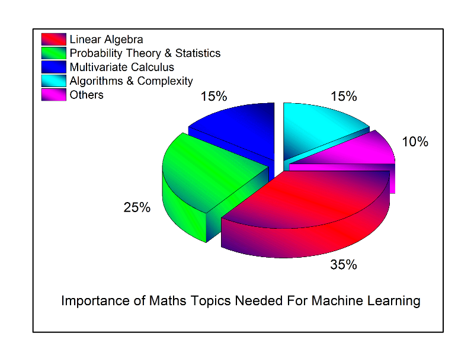

在过去几个月里，有几个人联系过我，说他们渴望进军数据科学领域，使用机器学习 (ML) 技术探索统计规律，并打造数据驱动的完美产品。但是，据我观察，一些人缺乏必要的数学直觉和框架，无法获得有用的结果。这是我决定写这篇博客文章的主要原因。最近，易用的机器学习和深度学习工具包急剧增加，比如scikit-learn、Weka、Tensorflow、R-caret等。机器学习理论是一个涵盖统计、概率、计算机科学和算法方面的领域，该理论的初衷是以迭代方式从数据中学习，找到可用于构建智能应用程序的隐藏洞察。尽管机器学习和深度学习有巨大的发展潜力，但要深入掌握算法的内部工作原理并获得良好的结果，就必须透彻地了解许多技术的数学原理。
为什么担忧数学？
出于许多原因，机器学习的数学原理很重要，下面重点介绍部分原因： 选择正确的算法，这涉及到考虑准确率、训练时间、模型复杂性、参数数量和特征数量。 选择参数设置和验证策略。 通过理解偏差-方差权衡，识别欠拟合和过拟合。 估算正确的置信区间和不确定性。
您需要多高的数学知识水平？
在尝试理解诸如机器学习这样的跨学科领域时，需要考虑的主要问题是，理解这些技术需要多大的数学知识量和多高的数学知识水平。此问题的答案涉及多个维度，而且取决于个人的知识水平和兴趣。对机器学习的数学公式和理论发展的研究从未间断过，一些研究人员正在研究更高级的技术。我将介绍我认为成为机器学习科学家/工程师所需的最低数学知识水平，以及每个数学概念的重要性。

- 线性代数：同事 Skyler Speakman 最近说“线性代数是 21 世纪的数学”，我完全同意这种说法。在机器学习中，线性代数无处不在。要理解用于机器学习的优化方法，需要掌握许多主题，比如主成份分析 (PCA)、奇异值分解 (SVD)、矩阵特征分解、LU 分解、QR 分解/因式分解、对称矩阵、正交化/标准正交化、矩阵运算、投影、特征值和特征矢量、矢量空间，以及范数。关于线性代数，令人惊奇的是网上有如此多的资源。我总是说，由于互联网上存在大量资源，传统的课堂教学正在消亡。我最喜欢 MIT Courseware（Gilbert Strang 教授）提供的线性代数课。
- 概率论和统计学：机器学习与统计学并不是完全不同的领域。实际上，有人最近将机器学习定义为‘在 Mac 上实践统计学’。机器学习需要的一些基本的统计和概率理论包括组合学、概率规则和公理、贝叶斯定理、随机变量、方差和预期、条件和联合分布、标准分布（伯努利、二项式、多项式、均匀和高斯分布）、矩母函数、最大似然估计 (MLE)、先验和后验、最大后验概率估计 (MAP)，以及采样方法。
- 多变量微积分：一些必要的主题包括微积分、偏微分、矢量-值函数、方向梯度、海赛函数、雅可比行列式、拉普拉斯算子和拉格朗日分布。
- 算法和复杂优化：这对理解机器学习算法的计算效率和可伸缩性，以及利用数据集的稀疏性都很重要。需要数据结构（二叉树、哈希运算、堆、堆栈等）、动态编程、随机化和次线性算法、图表、梯度/随机下降，以及原对偶方法的知识。
- 其他：包括上述 4 个主要领域未涵盖的其他数学主题。这些主题包括实数和复数分析（集合和数列、拓扑、度量空间、单值和连续函数、极限、柯西核、傅里叶变换），信息论（熵、信息增益），函数空间和数集。
本文摘自：这里.